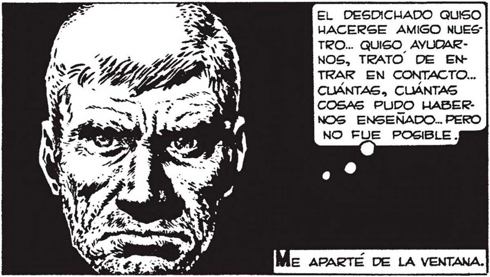
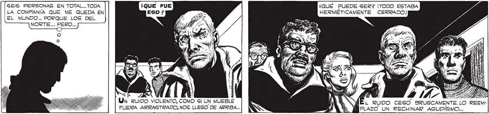

EL DESDICHADO auiso] 313 HACERSE AMIGO NUESTRO... QUISO AYUDARNOS, TRATO DE EN TRAR EN CONTACTO... CUÁNTAS. CUÁNTAS COSAS PUDO HABERNOS ENSEÑADO.. PERO PEGUÍA NEVANDO. EL SOL NUEVO y) IRIGABA LOS COPOS. ALLÍ,NO LEJOS DE POLSKY, VACIA ELYMANO”.. Y” NO FUE POSIBLE. A 'M.. yo ll É: HAGO MAL EN MIRAR) A LOS MUERTOS... MEJOR MIRAR A LOS Gl TE HACES UN LINDO VIVOS... ELLOS SON z. , TRAJE, MARTITA, TE LA ÚNICA COMPANIA | E——— JE hi Sa, LLEVARE A TOMAR EL TRAJE SERA CO QUE ME QUEDA EN | Feat € Us TE A LA CONFITERÍA. MO PARA IR AL EL MUNDO... A Y:: ES x= COLON! A TOMAR EL TÉ, ENTONCES. ¡MI FO ISA LAVAN ADAN NUS Ñ ISA w HPA DANOS + V (Y KA GEIS PERSONAS EN TOTAL... TODA LA COMPANÍA QUE ME QUEDA EN EL MUNDO... PORQUE LOS DEL NORTE... ja ¿QUÉ PUEDE SER? ¡TODO ESTABA HERMÉTICAMENTE CERRADO! ON O S ¡IS | LLINNSAROE UN au LS = y A DIS LS NA 9] ll Un ruiDO VIOLENTO, COMO Sl UN MUEBLE L RUIDO CESO BRUSCAMENTE.LO REEMFUERA ARRASTRADO, NOS LLEGO DE ARRIBA... INNA Ma dea? U ECU auna.

